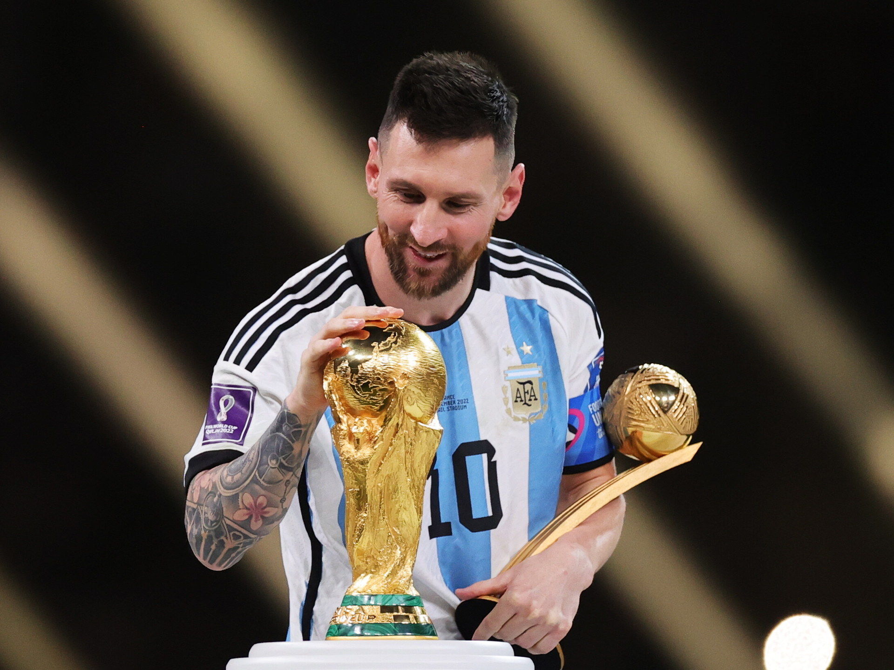
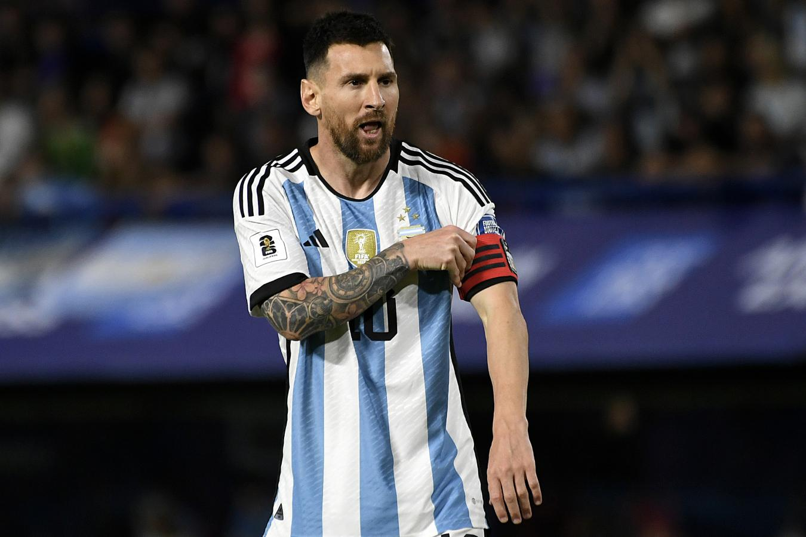

Lionel Messi volvió a hablar de su retiro: "No sé cuánto más voy a jugar"
Leo aseguró que todavía no piensa en dejar el fútbol y tampoco se puso plazos, pero remarcó que intentará "aprovechar" y "disfrutar" de la carrera "hasta que pueda".

El capitán de 36 años aseguró que todavía no piensa en dejar el fútbol y tampoco se puso plazos, pero remarcó que intentará "aprovechar" y "disfrutar" de la carrera "hasta que pueda".
Messi volvió a hablar de su retiro: "No sé cuánto más voy a jugar"
"Todavía no lo pienso, soy sincero. A mí me gusta jugar, disfruto de estar con una pelota, de estar adentro de la cancha, de competir y de los entrenamientos", expresó Messi en declaraciones
"No sé cuánto más voy a jugar pero intentaré aprovechar hasta que pueda, hasta que esté bien y después veré", agregó la nueva figura de Inter Miami
"Para el después, hay tiempo de pensar, analizar y elegir. Hoy lo más importante es disfrutar de lo queda, sea poco o mucho pero al máximo", insistió el capitán del seleccionado argentino.
¿Porqué Messi decidió jugar en Inter Miami?

"Fue una decisión familiar, intentar de buscar el bien familiar. Pasamos dos años complicados, no habíamos estado bien, nos había costado", comenzó, haciendo alusión a las dos temporadas en PSG.
Luego, agregó: "Era volver un poco a lo que éramos cuando estábamos en Barcelona, disfrutar el día a día, de los nenes, que la familia esté bien, que yo disfrute el día a día deportivo, que no me estaba pasando. Por muchas razones decidimos que este iba a ser el lugar y hoy, después de un tiempo, no nos equivocamos".
Leo Messi: del "tenemos que levantarnos" al "no pensamos en los records"
El mejor jugador del mundo ya dejó atrás la derrota en la Bombonera y sabe que "ahora vamos a una cancha difícil, con lo que significa jugar contra Brasil, en el Maracaná. Con una selección que últimamente no se viene encontrando bien también, que perdió con Uruguay y que perdió con Colombia otra vez de visitante".
"La gente en Brasil es muy exigente con la Selección, así que va a ser una linda prueba para nosotros", amplió en ese sentido.
De cara al duelo del martes, Messí epxlicó que "es una motivación porque es Brasil y siempre los partidos con Brasil son especiales. Pero nosotros no pensamos en eso, ni en los récords, ni en cosas que podemos llegar a conseguir".
Argentina yua dejó la derrota contra Uruguay atrás y así lo expresó el capitán: "Simplemente seguir creciendo, seguir mejorando. Mejorar lo que no hicimos bien y volver otra vez a la victoria. Y a la dinámica del juego nuestro que es lo más importante".
"Los partidos con Brasil son clásicos. Son partidos aparte, de mucha historia, sobre todo por cómo viene la historia de este último tiempo. Tenemos que levantarnos y respetando lo que son ellos, porque son Brasil", concluyó el 10.